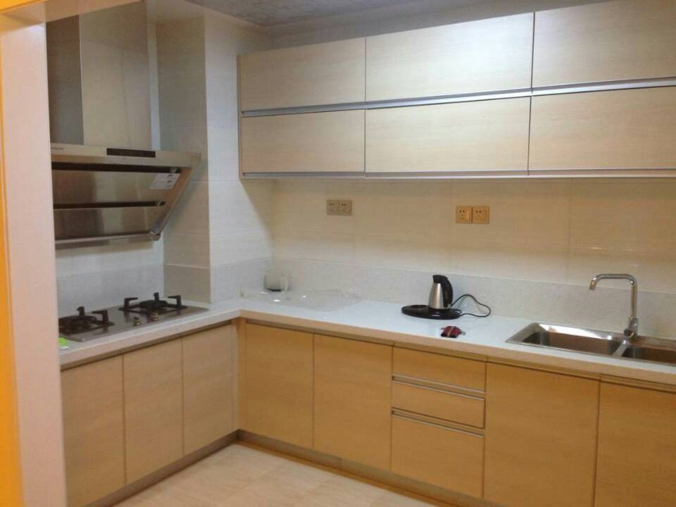
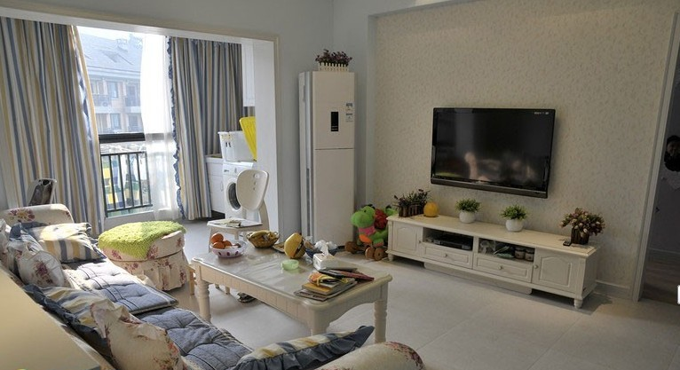
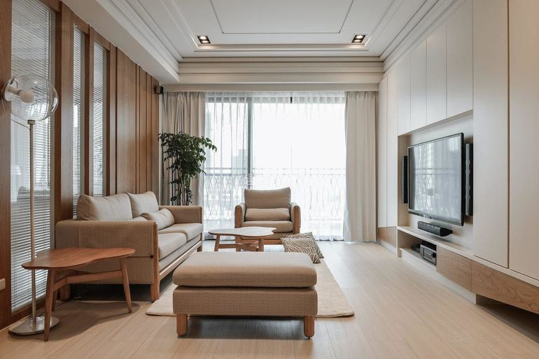

小户型受限于面积的狭小，在装修空间视觉上，给人一种局限、压迫感，采用开放或半开放式空间手法，可说是最常惯用的设计方式。以打通隔墙的方式来扩展室内空间，形成所谓的一室空间，虽是单一式的格局形状，但分隔各个生活区域及一些私密性的空间，仍是不可忽视的环节之一。如可利用地板高低落差、橱柜、屏风、拉门、天花板等象征手法界定出不同的生活空间。
色彩与照明的相互运用，也可增加空间感。在色彩上，以单一色系为主调，尽量简洁、明朗、讲求和谐的调性，同时摆放饰品的搭配，不论陈列的方式或色彩，应避免繁重、杂乱无章。照明器具，为免产生室内高度被压缩的反效果，宜采用式样简单、大方，而且是嵌在壁面紧贴天花板的灯具为佳。小户型受面积限制，无法像一般住家有宽裕的空间规划一个独立的储藏室，因而只能从现有的空间取用。
小户型格局的居室其实不难规划，只要掌握简单、明朗的原则，简化空间机能，再赋予自己的巧思，即能设计出舒适、雅致的小天地。
